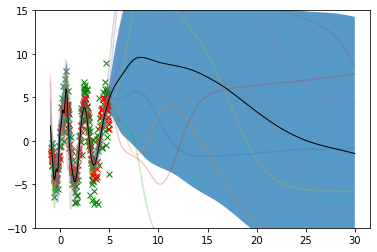

# %%
import numpy as np
np.random.seed(0)
import haiku as hk
import jax.numpy as jnp
import jax
from tqdm import tqdm, trange
from matplotlib import pyplot as plt
from jax_bayes.utils import confidence_bands
from jax_bayes.mcmc import (
# langevin_fns,
mala_fns,
# hmc_fns,
)
#could use any of the samplers modulo hyperparameters
# sampler_fns = hmc_fns
# sampler_fns = langevin_fns
sampler_fns = mala_fns
def build_dataset():
n_train, n_test, d = 200, 100, 1
xlims = [-1.0, 5.0]
x_train = np.random.rand(n_train, d) * (xlims[1] - xlims[0]) + xlims[0]
x_test = np.random.rand(n_test, d) * (xlims[1] - xlims[0]) + xlims[0]
target_func = lambda t: (np.log(t + 100.0) * np.sin(1.0 * np.pi*t)) + 0.1 * t
y_train = target_func(x_train)
y_test = target_func(x_test)
y_train += np.random.randn(*x_train.shape) * (1.0 * (x_train + 2.0)**0.5)
return (x_train, y_train), (x_test, y_test)
def net_fn(x):
mlp = hk.Sequential([
hk.Linear(128, w_init=hk.initializers.Constant(0),
b_init=hk.initializers.Constant(0)),
jnp.tanh,
hk.Linear(1, w_init=hk.initializers.Constant(0),
b_init=hk.initializers.Constant(0))
])
return mlp(x)16 Bayesian Neural Network with Jax
- Resources: https://github.com/jamesvuc/jax-bayes
# ======= Setup =======
xy_train, xy_test = build_dataset()
(x_train, y_train), (x_test, y_test) = xy_train, xy_testx_train.shape(200, 1)y_train.shape(200, 1)x_test.shape(100, 1)# lr = 1e-3
# reg = 0.1
# lik_var = 0.5
# lr = 1e-1
lr = 1e-4
reg = 0.1
lik_var = 0.5
net = hk.transform(net_fn)
key = jax.random.PRNGKey(0)
sampler_init, sampler_propose, sampler_accept, sampler_update, sampler_get_params = \
sampler_fns(key, num_samples=11, step_size=lr, init_stddev=5.0)def logprob(params, xy):
""" log posterior, assuming
P(params) ~ N(0,eta)
P(y|x, params) ~ N(f(x;params), lik_var)
"""
x, y = xy
preds = net.apply(params, None, x)
log_prior = - reg * sum(jnp.sum(jnp.square(p))
for p in jax.tree_leaves(params))
log_lik = - jnp.mean(jnp.square(preds - y)) / lik_var
return log_lik + log_prior
@jax.jit
def sampler_step(i, state, keys, batch):
# print(state)
# input()
params = sampler_get_params(state)
logp = lambda params:logprob(params, batch)
fx, dx = jax.vmap(jax.value_and_grad(logp))(params)
fx_prop, dx_prop = fx, dx
# fx_prop, prop_state, dx_prop, new_keys = fx, state, dx, keys
prop_state, keys = sampler_propose(i, dx, state, keys)
# for RK-langevin and MALA --- recompute gradients
prop_params = sampler_get_params(prop_state)
fx_prop, dx_prop = jax.vmap(jax.value_and_grad(logp))(prop_params)
# for HMC
# prop_state, dx_prop, keys = state, dx, keys
# for j in range(5): #5 iterations of the leapfrog integrator
# prop_state, keys = \
# sampler_propose(i, dx_prop, prop_state, keys)
# prop_params = sampler_get_params(prop_state)
# fx_prop, dx_prop = jax.vmap(jax.value_and_grad(logp))(prop_params)
accept_idxs, keys = sampler_accept(
i, fx, fx_prop, dx, state, dx_prop, prop_state, keys
)
state, keys = sampler_update(
i, accept_idxs, dx, state, dx_prop, prop_state, keys
)
return state, keys# ======= Sampling ======
# initialization
params = net.init(jax.random.PRNGKey(42), x_train)params['linear']['w'].shape(1, 128)sampler_state, sampler_keys = sampler_init(params)#do the sampling
for step in trange(5000):
sampler_state, sampler_keys = \
sampler_step(step, sampler_state, sampler_keys, xy_train)
sampler_params = sampler_get_params(sampler_state) 0%| | 0/5000 [00:00<?, ?it/s]FutureWarning: jax.tree_leaves is deprecated, and will be removed in a future release. Use jax.tree_util.tree_leaves instead.
for p in jax.tree_leaves(params))
100%|██████████| 5000/5000 [00:07<00:00, 640.63it/s]sampler_params['linear']['w'].shape(11, 1, 128)# ========= Plotting ========
plot_inputs = np.linspace(-1, 30, num=600).reshape(-1,1)
outputs = jax.vmap(net.apply, in_axes=(0, None, None))(sampler_params, None, plot_inputs)plot_inputs.shape(600, 1)outputs.shape(11, 600, 1)outputs.squeeze(-1).T.shape(600, 11)lower, upper = confidence_bands(outputs.squeeze(-1).T)
f, ax = plt.subplots(1)
ax.plot(x_train.ravel(), y_train.ravel(), 'x', color='green')
ax.plot(x_test.ravel(), y_test.ravel(), 'x', color='red')
for i in range(outputs.shape[0]):
ax.plot(plot_inputs, outputs[i], alpha=0.25)
ax.plot(plot_inputs, np.mean(outputs[:, :, 0].T, axis=1), color='black',
linewidth=1.0)
ax.fill_between(plot_inputs.squeeze(-1), lower, upper, alpha=0.75)
ax.set_ylim(-10, 15)
plt.show()